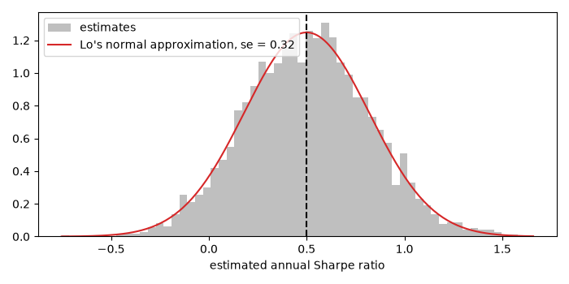
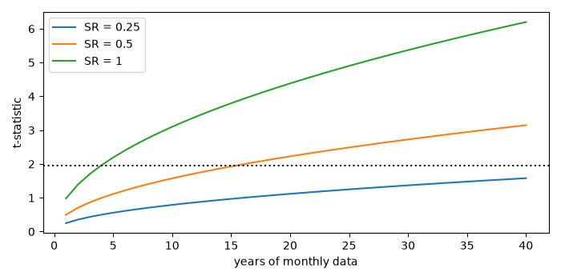

Note
Go to the end to download the full example code or to run this example in your browser via JupyterLite.
The Sharpe ratio#
William Sharpe (1966) ranked 34 mutual funds by their reward-to-variability ratio, the mean excess return divided by its standard deviation. By Tobin’s separation it is the right yardstick for an investor’s whole portfolio: leverage changes the return but not the ratio. It is also an estimate, and Andrew Lo (2002) showed how noisy: with independent returns its standard error is \(\sqrt{(1 + SR^2/2)/n}\) per period, so years of data separate good managers from lucky ones only slowly.
import matplotlib.pyplot as plt
import numpy as np
from financialkit.portfolio import sharpe_ratio, sharpe_ratio_se
rng = np.random.default_rng(7)
Leverage does not change the ratio#
leverage 0.5: mean 3.7%, annual Sharpe 0.214
leverage 1: mean 5.0%, annual Sharpe 0.214
leverage 2: mean 7.5%, annual Sharpe 0.214
Sampling distribution of the estimate#
Ten years of monthly returns from a fund whose true annual Sharpe ratio is 0.5, repeated 4000 times.
true_sr = 0.5
R = rng.normal(true_sr / np.sqrt(12) * 0.04, 0.04, size=(120, 4000))
est = sharpe_ratio(R, 0.0, 12)
se = sharpe_ratio_se(R[:, 0], 0.0, 12)
fig, ax = plt.subplots(figsize=(7, 3.5))
ax.hist(est, bins=60, density=True, color="0.75", label="estimates")
x = np.linspace(est.min(), est.max(), 200)
ax.plot(x, np.exp(-0.5 * ((x - true_sr) / se) ** 2) / (se * np.sqrt(2 * np.pi)), "C3", label=f"Lo's normal approximation, se = {se:.2f}")
ax.axvline(true_sr, color="k", ls="--")
ax.set_xlabel("estimated annual Sharpe ratio")
ax.legend()
fig.tight_layout()
print(f"P(estimate < 0) = {np.mean(est < 0):.1%}")

P(estimate < 0) = 5.6%
Years needed to tell a Sharpe ratio from zero#
years = np.arange(1, 41)
fig, ax = plt.subplots(figsize=(7, 3.5))
for s in [0.25, 0.5, 1.0]:
ax.plot(years, s / np.sqrt((1 + 0.5 * (s / np.sqrt(12)) ** 2) / (12 * years)) / np.sqrt(12), label=f"SR = {s:g}")
ax.axhline(1.96, color="k", ls=":")
ax.set_xlabel("years of monthly data")
ax.set_ylabel("t-statistic")
ax.legend()
fig.tight_layout()
plt.show()

Total running time of the script: (0 minutes 0.176 seconds)